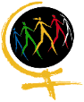

پذيرش > تریبون > گفت و گو > در راه آزادی گام بردار، یاد خواهی گرفت چگونه از آن استفاده کنی
 مصاحبه با الیزابت الس انسان شناس فرانسوی و از فعالان لیگ حقوق بشر فرانسه مصاحبه با الیزابت الس انسان شناس فرانسوی و از فعالان لیگ حقوق بشر فرانسه

 در راه آزادی گام بردار، یاد خواهی گرفت چگونه از آن استفاده کنی در راه آزادی گام بردار، یاد خواهی گرفت چگونه از آن استفاده کنی
3 دی 1385 - گفتگو از : جلوه جواهری ، ناهید کشاورز - نسخه قابل چاپ
کمپین را چطور دیدید؟
الیزابت: آنچه که به نظر من در هر جنبشی در هرجای دنیا بسیار اهمیت دارد و من از آن دفاع می کنم، خواست برابری حقوقی است. نکته دیگری که باید به آن توجه داشت این است که وقتی در کشوری مسلمان زندگی می کنی، مشکلات بزرگتری وجود دارد. حرکتی که در حال پیشروی است، چه در فرم و چه در ایده ای که از آن دفاع می کند، بسیار واقع گراست اگر بتواند آموزش را به سطح عمومی ببرد. آنچه را که امروز دیدم و به نظر من بسیار درخشان است، جوان بودن کنش گران جنبش است و اینکه همه شما از یک بلوغ فکری برخوردارید که توانایی مدیریت کمپین را به شما می دهد و این باعث تعجب من شد، چون در عین جوانی از نظر فکری هم پخته و هم بسیار جدی هستید. بر اساس آنچه که دیدم شما بسیار آرام هستید و این آرامش شاید به تاریخ تان مربوط باشد. در واقع همین آرامش به شما اجازه می دهد که به هم گوش کنید، گرچه ممکن است موضع گیری های متفاوتی داشته باشید و جایگاه های مختلفی را اشغال کنید.
کدام یک از فعالیت های جنبش زنان در فرانسه، با واکنش عمومی تری همراه بوده؟
الیزابت: جنبش زنان در فرانسه هیچ وقت یک دست نبوده است. و گاهی مجبور بوده به تنهایی واکنش نشان دهد. ما می توانیم از «جنبش های زنان» صحبت کنیم تا «جنبش زنان». این جنبش ها گاهی اوقات در حرکت های خاص با هم متحد می شدند اما مهم ترین حرکتی که توانست بزرگترین ائتلاف میان جنبش های زنان را ایجاد کند، مبارزه برای دستیابی به حق سقط جنین و دسترسی به وسایل جلوگیری از بارداری بود. آن چه که در این فعالیت مهم بود، تلاش های وکلایی چون ژیزل حلیمی به همراه مبارزات پزشکان مدافع حق سقط جنین بود. مسئله ای که اکنون نادیده گرفته می شود.کوشش های پزشکان از آن جهت بسیار اهمیت دارد که با ریسک از دست دادن شغل همراه بود در صورتی که تلاش های چهره های شناخته شده در عرصه هنر و ادبیات در انتشار بیانیه ای در دفاع از حق سقط جنین و برگزاری تجمع چندان ریسکی به همراه نداشت.
در نهایت همه این تلاش ها به تصویب قانون حق سقط جنین در سال 1975 منجر شد. خانم سیمون ویل وزیر بهداشت کابینه ژیسکار دستن با وجود مخالفت بسیار جناح راست که خود نیز از آن جناح محسوب می شد، توانست این قانون را در پارلمان و سنا به تصویب برساند.در آن زمان بیشتر اعضای هر دو مجلس را راست ها تشکیل می دادند. این قانون با رای نمایندگان حزب کمونیست، حزب سوسیالیست و بخشی از راست به تصویب رسید. بحث حق سقط جنین با تلاش های گروه های مختلف توانست در مدت کوتاهی تمامی جامعه را در بر گیرد.
کمپین از ابتدای شکل گیری، با انتقاد بخشی از دانشجویان «چپ» مواجه شد. به اعتقادآنها، این حرکت، یک حرکت لیبرالی است و بورژوازی از طریق چنین حرکت هایی سعی در انحراف جنبش زنان دارد. از نقطه نظر این انتقادها، خواست تغییر قوانین، خواستی حداقلی و ناچیز است و گامی به عقب. ستم جنسيتي در ساختارهاي اجتماعي بازتوليد ميشود و حتا با حذف قوانين جنسيتگرا در وضعيت غالب زنان تغييرمحسوسي به وجود نخواهد آمد(1). نظر شما در این باره چیست؟
الیزابت: در بسیاری از موارد، در این نوع فعالیت ها کسانی هستند که می گویند، این حرکت به اندازه کافی سیاسی نیست و باید به سیاست های کلان تر پرداخت. اما واقعا چه چیزی مهم تر است. مهم این است که قوانین تغییر یابند و به رشد جامعه بیانجامد و مسائل واقعی جامعه مطرح شوند و یا اینکه منتظر تغییرات سیاسی کلان بود که معلوم نیست چه زمانی خواهند آمد؟ نباید به این نقدها توجه کرد. این گفتمان در ظاهر بسیار چپ و انقلابی، اما در عمل راست و محافظه کار است؛ چون در واقع هیچ راه کار عملی نشان نمی دهد. آن چه مهم است، این است که از زندگی واقعی زن ها شروع کنیم و ببینیم درد واقعی آن ها چیست. و سعی کنیم تا صدای زنانی که در حاشیه هستند در جامعه شنیده شود و آنها بتوانند مسائل شان را بازگو و صدایشان را به گوش همه برسانند. نباید برای زنان و از جایگاه شان حرف زد، بلکه باید تلاش کرد که آن ها بتوانند بحث های خود را مطرح کنند.
در قسمتی از طرح کمپین آمده است که «برابری حقوقی زن و مرد مغایرتی با اسلام ندارد»(2). این فراز از کمپین با واکنش بخش هایی از نیروهای «لاییک» جامعه مواجه شد. نظر شما در مورد حقوق زن در اسلام چیست؟
الیزابت: در واقع باید تجربه های زنان در دیگر کشورهای مسلمان را در نظر گرفت. اگر مثال مالزی را در نظر بگیریم، « خواهران در اسلام» سعی می کنند این فکر را ترویج دهند که تا به حال همه قرائت هایی که از قران شده است، مردسالارانه بوده و می توان قرائتی از سوی زنان از قران ارائه داد. باید به این نکته توجه داشته باشیم که آنها غالبا زنان لائیکی هستند که برای تحول حقوق و رسیدن به برابری حقوقی تلاش می کنند.
هنگامی که راجع به زنان در اسلام در فرانسه صحبت می کنم، سعی دارم به دو چیز توجه کنم. ابتدا اینکه اسلام در جوامع مختلفی رشد کرده است. اکثریت مسلمانان در کشورهای غیر عرب زندگی می کنند. اندونزی بزرگترین کشور غیر عرب مسلمان است. بنابراین اسلام مجبور بوده که خود را با جوامعی با فرهنگ های متفاوت از عرب سازگار کند.
در برخی از کشورها با ورود اسلام، پیشرفت هایی برای زنان به ویژه در ارث به وجود آمد و در برخی از کشورها وضعیت زنان با ورود اسلام بدتر شده است. ولی چیزی که به نظر می رسد این است که این عرف ها، رسوم و سنت ها بوده اند که ضد زن و یا به نفع آن ها بوده اند. در واقع اسلام مجبور بوده در بدو ورود خود در هر کشوری خود را با رسوم و سنت های آن جامعه تطبیق دهد. مثلا در مورد چین، اسلام مجبور بوده که قوانینی را که اسلامی نبوده اند در یک کشور غیر مسلمان به کار ببرد. به هر حال مسلمانان چین مجبور بوده اند که به صورت رسمی قوانین برابر را بپذیرند. حال ممکن است در عمل اتفاق دیگری بیفتد. در واقع برابری حقوقی مرحله اول جنبش زنان است. مرحله دوم دسترسی تمامی زنان به این حقوق برابر است.
مطالبه «تفسیری مترقی» از اسلام با این انتقاد مواجه است که این مطالبه باعث تاخیر در رسیدن به یک دولت سکولار می شود، شما چه فکر می کنید؟
الیزابت: اگر بخواهید وارد مبارزه برای برابری حقوقی شوید، راهی طولانی در پیش دارید و مطالبه دولت سکولار راه طولانی دیگری است که نمی توان این دو را همزمان در یک حرکت و باهم پیش برد؛ پس بهتر است انتخاب کنید. ببینید شما می خواهید با همه زنان کار کنید و یا اقلیتی از آنان که می ترسید آن ها را از دست دهید. باید ببینید مطالبات اساسی شما چیست و چگونه می توانید حمایت گسترده ای را برای دستیابی به این مطالبات جلب کنید. اگر شما منتظر هستید که دولتی سکولار بیاید و به خواسته های شما پاسخ دهد، باید خیلی منتظر بمانید. اما به نظر من از همین حالا برای برابری حقوقی مبارزه کنید. این گونه شانس پیروزیتان بیشتر است. نکته مهم این است که برابری حقوقی، تمام زنان را در بر می گیرد.
وقتی که به زندگی زنانی که قرباني قتل هاي ناموسي مي شوند يا به زندگي زناني كه در دهه 70 در فرانسه به دلیل سقط جنین مورد تعقیب قضایی قرار گرفته اند، نگاه می کنیم، می بینیم که تقریبا اکثریت این زنان از طبقات فرودست جامعه برخاسته اند، در مورد نقش قوانین نابرابر در زندگی این گونه زنان چه فکر می کنید؟
این درست است که قوانین نابرابر در زندگی زنان فقیرتر نقش بیشتری ایفا می کنند، چرا که زنان طبقات فراتر توان و آگاهی دور زدن قوانین را دارند ولی در کشورهایی که مبارزات حقوقی تا حدودی به ثمر رسیده است باید برای اینکه همه زنان از این قوانین برابر بهره مند شوند، تلاش شود.
چگونه می توان به سازماندهی کمپین کمک کرد اما قیم آن نبود؟
الیزابت: هیچ الگوی ایده آلی وجود ندارد. پرسشهایی از این دست که چگونه می توان دمکرات بود و سازماندهی کرد، در آغاز هر جنبشی و در همه جای دنیا مطرح بوده است. زمانی که شروع به کار می کنیم و هنوز اشکال ایده آل را پیدا نکرده ایم، این بحث ها شروع می شود. باید تلاش کرد که افراد بیشتری در تصمیم گیری ها شرکت کنند ولی هیچ حرکتی را نمی توانیم قبل از آغاز سازماندهی کنیم. در واقع، زمانی که پیش می رویم، یاد می گیریم چگونه حرکت کنیم، راه حل ها را بیابیم و جنبش را عمومی تر کنیم تا افراد بیشتری در آن درگیر شوند. باید بگویم که در حرف زدن با مردم است که یاد می گیریم.
راه حل قطعی وجود ندارد. تنها چیزی که مهم است، این است که حتی اگر مجبور شویم زمان بیشتری را صرف کنیم، بحث ها را عمومی کنیم و تلاش کنیم تا تصمیمات به وسیله جمع بزرگتری گرفته شوند. در برخی بحث ها، اینترنت تسهیل کننده است. اگر مطالبات خیلی روشن باشد، باید بگذاریم کنشگران آزاد باشند و تنها یک الگو را برای پیشبرد کار ارائه ندهیم.
می توانم در این جا از جنبش آموزش بدون مرز برای حمایت از خانواده هایی که کودکان مدرسه رو دارند و به طور غیرقانونی در فرانسه اقامت دارند و به افراد بی کاغذ مشهورند اشاره کنم. این جنبش با معلمان و والدین هم کلاسی های این کودکان آغاز گردید و بعد لیگ حقوق بشر و فعالان سندیکای معلمان نیز به آن پیوستند. در هر مدرسه ای کمیته ای تشکیل شد و شبکه ای از این کمیته ها ایجاد شدند.بعد از دو سال این شبکه به قدری قوی شد که توانست آدمهایی را که هر گز پیش از آن در هیچ جنبشی فعال نبودند، به خود جلب کنند.این افراد نمی دانستند که کار در سازمان یعنی چه. مسئله آن ها شبیه شما بود که آیا باید در شبکه ماند و یا در یک گروه خود را سازماندهی کرد.
اگر در شبکه بمانیم این خطر وجود داردکه کسانی که در مرکزهستند ، تصمیم ها را بگیرند. بنابراین تصمیم گیری ها چندان دموکراتیک نیست.کسی که دسترسی بیشتری به اطلاعات دارد، می تواند تصمیم گیری کند. بنابراین برای دمکراتیک کردن تصمیم گیری، باید اطلاعات در دسترس همه باشد. ولی اگر یک تشکیلات سلسله مراتبی سفت سخت وجود داشته باشد، کسی آن را نمی پذیرد.
فعلا این جنبش (آموزش بدون مرز) در حال کار بر روی این فرمول است که اجازه دهد همه کمیته های محلی خودشان را مطرح کنند و از طرف دیگر، اجازه می دهد، سازمانی در مرکز به وجود آید که با افراد شناخته شده، ارتباط داشته باشد.این کمیته مرکزی شامل بخشی از بنیان گذاران این جنبش و نمایندگان کمیته های محلی است. هر کدام از کمیته های محلی به این ترتیب مستقل باقی می مانند.چیزی که مهم است این است که مطالبات بسیار روشن است و هرکسی راه به دست آوردن آن ها را پیدا می کند.
در حرکتی که شما پیش رو دارید مهمترین نکته ای که به پیش روی کارتان کمک خواهد کرد، روشن بودن مطالباتتان است. افرادی که جذب کمپین می شوند، اشکال بیان این مطالبات را خودشان باید یاد بگیرند. ایده اصلی ورکشاپ ها آنجاست که می توان تلاش کرد که آدمها به حرف بیایند. باید همیشه به یاد داشته باشید که نه کاری برای زنان، بلکه کاری با زنان انجام می دهید. بنابراین کمک حقوقی به زنان به معنای آن است که به آنها آگاهی حقوقی بدهید تا بتوانند از حق خود دفاع کنند.
در آخر می خواهم به این نکته اشاره کنم که تا آدمها آزاد نباشند، نمی توانند یاد بگیرند که چگونه از آزادی شان استفاده کنند. تو در راه آزادی گام بردار، بعد یاد می گیری که چگونه از آن استفاده کنی.
1) نقدي بر كمپين تغيير قوانين زن ستيز / امين قضايي
/spip.php?article235
2) كليات طرح ”يك ميليون امضاء براي تغيير قوانين تبعيضآميز“
/spip.php?article12
ارسال به
بالاترین
،
توییتر
،
فریندفید
،
فیسبوک
در همين بخش :
 دهمین دورۀ مراسم تندیس صدیقه دولت آبادی ۱۳۹۲ دهمین دورۀ مراسم تندیس صدیقه دولت آبادی ۱۳۹۲
کارت پستالهایی به بهانهی هشت مارس و به یاد همهی مبارزین راه برابری
بیانیه بیش از 350 تن از مدافعان حقوق زنان به مناسبت روز جهانی زن؛ زنان هر روز فرودستتر میشوند
لباسی که برای تن ما دوخته اند! /اعظم بهرامی
چالشها و چشمانداز فعالیت مدنی زنان
ديگر بخش ها :
طرح یک میلیون امضا
|
مقالات
|
سایت نوشته ها
|
اخبار
|
گزارش كمپين
|
گفت و گو
|
علیه سکوت
|
كوچه به كوچه
|
نامه های شما
|
گزارش ویژه
|
گفتگو با اعضا
|
ویژه سالگرد کمپین
|
تصویر برابری
|
دل آرام علی
|
تریبون
|
مقالات
|
تاریخ شفاهی
|
خارج از چارچوب
|
کتابخانه
|
درباره کمپین
|
کمپین در شهرها
|
کمپین در بند
|
صدای تغییر
|
ویژه 22 خرداد
|
لایحه حمایت از خانواده
|
گالری
|
عشا مومنی
|
امیر یعقوبعلی
|
خدیجه مقدم
|
راحله عسگری زاده و نسیم خسروی
|
پروین اردلان،جلوه جواهری، مریم حسین خواه، ناهید کشاورز
|
زینب پیغمبرزاده
|
سعیده امین، سارا ایمانیان، محبوبه حسین زاده، ناهید کشاورز و همایون نامی
|
احترام شادفر
|
نسیم سرابندی زاده،فاطمه دهدشتی
|
وبلاگ مهمان
|
پرونده خرم آباد
|
دستگیری ها
|
مریم مالک
|
پرستو اللهیاری
|
مهرنوش اعتمادی
|
سمیه رشیدی
|
Other Languages
|
همراهان
|
«فراخوان کمپین ده روز با بهاره هدایت»
| English
|